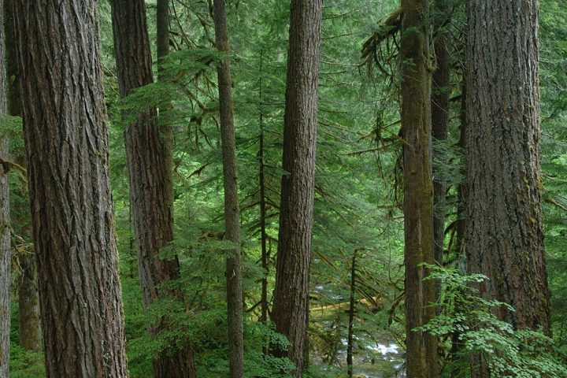
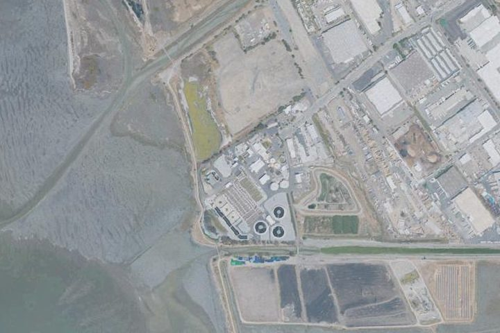

Catching up with . . . Rising
Elizabeth Rush · FRST 110

After Hurricane Sandy, residents organize to sell their flood-damaged homes together. Joe Tirone recalls that holdouts agreed once they were sure the land would be “returned to nature.”
Soccer fields are going up on the bought-out land. In 2019 the state sold just under six acres to the Staten Island Youth Soccer League for $10. The league broke ground on its first field in fall 2022 and plans six. Tirone, who led the buyout committee, objected. A 2020 study of 323 buyout households found that more than one in five moved to another place exposed to coastal flooding.
The promise and the fields · The league’s account · Where households moved
The flood insurance bill comes to each household. The cost of staying pushes people out.
Gloria Horning’s house stood four feet above ground. During Hurricane Sally in 2020, she reported about three feet of water in her living room. She and her neighbors worked with a hydrologist to understand how new building in the floodplain could affect their homes. In the city’s 2025 redevelopment plan, residents asked for affordable housing and better flood protection.
Chris Brunet describes $48 million to help islanders move. Edison Dardar wants to stay. The architects tell him that moving with the community is a condition of the program.
Chris moved to The New Isle in 2022. Edison returned to the island after Hurricane Ida and lived there until his death in 2023. Signing Louisiana’s agreement meant giving up the right to live on the island full-time. In 2024, residents of the new homes reported defects. In 2023 the Jean Charles Choctaw Nation filed a civil rights complaint against Louisiana’s handling of the move. It withdrew the complaint in January 2026, citing cuts to federal civil rights enforcement.
Chris in his own words · Edison’s island home · Louisiana’s rules · Complaints about the homes · The tribal council’s plan · Why the Nation withdrew
H. J. Andrews Forest, Oregon
pp. 185–205
.jpg){kind=link}
Bryan Doyle takes Rush to two of his bird-count points, 400 and 40. She learns the song of a Swainson’s thrush and photographs owls at point 40.
The research itself is now at risk. In 2026 a Forest Service reorganization and proposed cuts to federal science funding put the forest’s long-term studies in doubt. The 2023 Lookout Fire burned about 70% of the forest. The bird crew returned, and in 2025 heard or saw Swainson’s thrush at both of Rush’s points. A 2026 study of 1,027 survey areas detected spotted owls in 261 and barred owls in 891.
Funding and reorganization · Fire map · Bird counts · Owl study
Oro Loma, San Francisco Bay
pp. 223, 239, 245–246
Partly cleaned wastewater seeps through a wide planted slope between a sewage plant and the bay. Rush cannot decide whether it is too big or too small. The system is closed to the bay.
Berkeley researchers measured more than 95% of the nitrogen removed, year round, within the first couple of meters underground. Palo Alto has built the first horizontal levee connected to the bay. In August 2026 it was not yet fully operational. Along Oro Loma Marsh, the First Mile project would be the first full-scale one on the bay. Its timeline puts construction in 2028 or later.